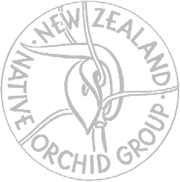

NZ Native Orchid Group Membership Activities |
 |
|
The New Zealand Native Orchid Group has members throughout New Zealand and some abroad who have a strong interest in the New Zealand Native Orchids. The active members engage in the observation, study and conservation of New Zealand's Native Orchids. The main activities are:
The Journal, published quarterly, provides a link betwen members and a forum to discuss new discoveries and report scientific changes. Journal articles often provide early reports of new discoveries that can lead to the description new species. The AGM is held between October and December at varying localities timed to provide a good opportunity for a local field trip that will provide many orchids in flower. It is usually held over a 3 day weekend. Although the main formal field trip coincides with the AGM, informal, local day trips may be held. Longer "tag along" trips to explore areas over a week or so, may be advertised by email. These trips are informal and participants are expected to organise their own transport and accommodation. Some members have volunteered to provide a local contact to advise on suitable places to visit and can offer information on local flowering times etc. They are located in: The society has links with the Australasian Orchid Society (ANOS) and its regional (State) members. This provides access to their publications and can be useful if you intend to visit Australia. The society provides grants to support orchid taxonomy, particularly through student grants. There are often supervised through Te Papa by Carlos Lehnebach. Members often support research projects by providing relevant local information. Members also carry out investigations that are reported in the Journal. Since its inception the society has been active in mapping species distributions and recording flowering times. This resource can help in finding plants in flower. |
|
Subscriptions Graeme Jane: |
|
| |